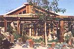
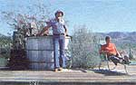
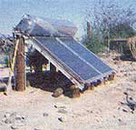
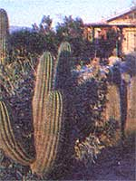
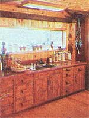
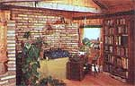
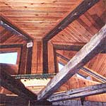
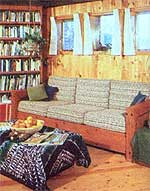
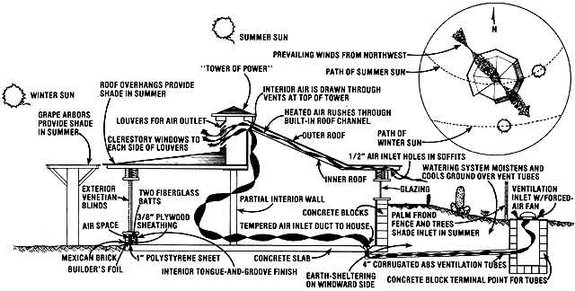

In the desert region of Southern California's Imperial Valley-just to the east of the urban sprawl of San Diego-the ambient temperature can seasonally fluctuate from a high of 130° to as low as 27°F, with humidity usually resting at a bone-drying 10%.
Nonetheless, folks do live in the area, and-needless to say-most such desert dwellers consume inordinate amounts of precious energy just keeping their air-conditioned homes comfortable . . . especially during the scorching hot summer months. However, one particularly resourceful resident of this arid wilderness-university professor James Harmon-has chosen to abandon the "conventional" methods of climate control and let the desert environment passively temper his abode all year round!
IT PAYS TO PLAN AHEAD
Achieving a natural climate control system takes a good deal of planning and sound research, even in an area of moderate climate, so-in order to make his concept a working reality in the often-uncompromising desert-Jim really had to do his homework. The house he eventually designed [1] rests on a concrete slab foundation that's set about four feet below the desert floor to take advantage of the temperature-stabilizing effect of the earth, [2] incorporates a naturally convected ventilation system that serves to heat the home in winter and cool it in summer, [3] uses insulation to the utmost on both interior and exterior walls, and [4] takes advantage of desirable wintertime sunlight through the use of south-facing glass-much of which is shaded by roof over-hangs in summer-both at ground level and within the roof's skylight "wall".
When Mr. Harmon first moved to his ten acres of desert property more than five years ago, his plans included not only the construction of a practical, inexpensive, energy-efficient dwelling, but-on a more comprehensive level-the creation of a nearly (or fully) self-sufficient homestead. And, except for his modest needs for outside electrical power, Jim has pretty much accomplished his goal of independence. The house itself is only part of a master layout ... which includes organic vegetable gardens and orchards (all of which are irrigated with underground watering systems), food drying bins, a workshop, a compost pile, a grape arbor, a greenhouse, and even a solar-heated outdoor hot tub!
Since construction of a dwelling was Jim's primary project (and because he scrounged much of his building material over a long period of time), the resourceful professor began to plan his structure long before he drove the first nail. "When you build a house like this, you go through a long period of information gathering and gestation, before drawing even the first few simple plans ... you've got to have some kind of idea about just what you want to accomplish and how your system should work.
"The design I used incorporates a bit of commonsense technology, some ancient architectural methods of the Middle East, and a smattering of southwestern American Indian building techniques. The result is a structure that's almost wholly passive, uses native building materials wherever possible, and-this is quite important to me-leaves an almost indiscernible impression on the landscape."
AND IT WORKS LIKE A CHARM . . .
Exactly how does Jim's home achieve his goals? First, the concrete foundation was poured in an excavation four feet deep, and surrounded with a low block wall that rises up to ground level. The slab doesn't utilize a bed layer of insulation, because-being a thermal sink-it must be given the chance to absorb ground heat in the winter to help warm the structure and, by the same token, assimilate the home's excess interior heat in the summer and transfer that warmth to the earth. Other factors were considered, too: The effect of occasional strong winds is minimized by the protective natural earth berming and the low profile of the dwelling. And, as an aesthetic plus, the line of sight to a nearby tarmac highway is conveniently interrupted, too.
But that's only part of the story . .. a natural ventilation system (adapted from Middle Eastern home design) is the major means of maintaining an acceptable comfort level in the house all year round. A total of eight unperforated, 4"-diameter, corrugated ABS plastic drainage pipes are connected-using vent holes previously formed in the structure's foundation-to the sides of the octagonally shaped dwelling. From these openings underneath the house, the tubes curve around, then come together (a slight distance is maintained between them to assure proper thermal conductivity) within a broad underground channel, and run to a point about 100 feet away. Jim figures the depth of this ditch-40 inches-to be something of a compromise ... between a shallower trench (which wouldn't afford proper air tempering), and a much deeper chasm (which would be excessively labor-intensive for a relatively slight gain in efficiency).
The terminal point for the tubes-simply a 2' X 2' concrete block "manifold" extending from ground level to a depth of about four feet-is capped with a reworked kitchen exhaust fan that allows air to be drawn through even when the motor is off. (On rare occasions, use of the fan is required to force air through the system and into the house.)
Normally, though, the intensity of the sun (and, in part, the direction of the prevailing winds) is great enough to cause the ventilation cycle to operate perfectly. In addition to the underground tubes, Professor Harmon's design incorporates-in effect-two useful layers of roof on its windward side: the standard exterior surface, covered with tar and gravel, and an interior roof which is nothing more than pine tongue-and-groove finish board fastened to the lower face of the roof joists. The upper surface of the inner roof is lined with builder's foil to form air passageways within the home's "cap". Jim provided inlets and outlets for the built-in ventilation channels by drilling a quantity of 1/2" hole-sin circular groups-through the soffits outside the house, and likewise by opening the ducts to the atmosphere at the apex of the roof, where he's built what he calls the "tower of power" (which is also ventilated, through the use of small ducts, to the air within the home itself) .
. . . IN THE SUMMER . . .
Hence, during the hot season, as the sun beats down on the structure's roof with a vengeance, it immediately heats the air within the ventilation channels. Naturally, this hot air begins to rise, moving upward with the slope of the roof. As the heated air flows out of the house by way of the tower, more air is drawn in from the outside eave vents ... and the process continues, resulting in a steady flow through the roof passageways.
This rapidly moving air, in turn, creates a suction which pulls more air directly from inside the house itself, through the ducts at the top of the tower. And, since a slight vacuum is actually created inside the dwelling, fresh outside air is pulled in from the only source possible: the underground ventilation tubes, which thermally condition the entering atmosphere by virtue of the constant 75-80°F ground temperature.
To help the cooling process during periods of intense summer heat, Jim also had the foresight to install exterior venetian blinds on the south-facing, leeward side of the house . . . which he closes to prevent the sun from beating in through the windows. Since these "light shutters" are external (not to mention white in color), heat never has a chance to actually find its way into the house.
Another trick up Jim Harmon's "thermal" sleeve is the very convenient cooling effect of evaporation. During the hottest part of the year (when J.H.'s gardens need the most moisture anyway), the professor supplies the liquid by activating his buried sprinkling system. The sprinklers soak the ground, and as the water evaporates from the sandy soil, the temperature of the earth decreases considerably . . . which, in turn, helps to further cool the incoming air in the underground vent tubes!
Mr. Harmon can achieve still more indoor "air conditioning" by activating his "swamp cooler": a broad belt of thin foam pad, revolving in a shallow tub of water, through which forced air is passed. (Jim also has plans for an indoor hot tub . .. which could function year round to provide humidity and/or heat as required, depending on the season.)
. . . AND IN THE WINTER
The same system that cools the air in summer also furnishes a temperate climate during the colder months. Since the sun is lower in the sky in wintertime (and because of Sol's effects are less intense then than in the summer), the heat buildup within the roof channels is not as great . . . and the airflow is likewise reduced slightly. Fortunately, the home's roof was so designed that wind moving, as it usually does in that locale, from the northwest helps to draw air from inside the house-and thus through the tubes-by virtue of a suction effect as it passes over the peak.
In case the flow is not sufficient to provide proper ventilation, Jim always has the option of activating the electric fan in order to force tempered air through the buried pipe network.
In addition, a considerable amount of winter heat is derived from direct insolation. Because the sun is low in the sky, its light can stream unhindered through the main south-facing windows and the vertical clerestory glazing at the peak of the roof. (Jim has installed freestanding redwood grape arbors above all the southern-exposed windows, to provide necessary summer shade and delicious fruit. Come cold weather, the vines dry up, so sunlight can pass through the arbors when it's most needed.)
AN AIRTIGHT THERMOS BOTTLE
Of course, the home's unique ventilation system operates properly only if the doors and windows are closed and the walls are relatively airtight. But varying levels of comfort can be attained-at any time of the year-by opening the windows as desired.
Another factor which contributes to the success of the Harmon desert home design is the fact that J.H. has gone to great lengths to properly insulate the structure. The lower portion of his dwelling is, of course, earth-sheltered . . . and the upper part, framed with 2 X 6 studs, is also just about impervious to nearly any temperature fluctuation that may occur. Behind the tongue-and-groove interior sheathing are two batts of fiberglass insulation, then a layer of 3/8" plywood. This surface is covered with 1 " polystyrene, which-in turn-is veneered with builder's foil.
The final covering is an exterior facade of ladrillos, or Mexican brick (similar in its thermal mass effects to the materials used in native American earthen shelters), which is set slightly away from the backing wall's foil-covered surface . . . to provide an air space through which excess heat-absorbed by the brick and reflected from the builder's foil-can escape into the roof channels. In addition to careful wall construction, the professor has fully insulated each thick exterior door.
"It's a lot more economical," Jim observes, "to pay for good thermal protection today-especially before a structure is completed than-to continue shelling out money over the next 10 or 20 or 30 years to cover the rising cost of heating. And if-after a period of time-you should decide to add insulation, the cost will always be greater . . . because of inflation and the extra work involved in doing the job on a finished house .
"Profit and loss considerations aside, however," Professor Harmon points out, "the design of my home is based not so much on the painful fact that energy costs are rising as on my conviction that energy consumption is an ethical rather than an economic issue. Energy waste, whether it proceeds from senselessness or selfishness, seems to me downright immoral . . . because it will adversely affect the lives of future generations."
SOUND CONSTRUCTION AND LOW COST
Even though his chief emphasis was not on economy . . . as close as Jim Harmon can figure, his partially earth-sheltered, 1,000-square-foot, octagonal desert home cost him about $22,000 to construct. This boils down to an easy-to-swallow $22 per square foot. Of course, Jim is quick to point out that the price would be difficult to duplicate today, partly because he purchased much of his wood before the big lumber price increase of several years ago, and also because he and some good friends (particularly Peter Hansen, who helped with both plans and construction) did much of the work themselves.
But even with the sharp increase in lumber costs, Mr. Harmon still believes that wood construction is a sound choice. "Framing a house with lumber remains a good way to go . . . mainly because, if you use the synthetics and other trash available on the market nowadays, you'll find such materials are just as expensive and provide less quality and longevity . I'd rather spend my money now and get it over with, and have the satisfaction of a well-done job."
Another reason Jim chose to go with wood (in conjunction with concrete and some of the native materials available in his area) was that he wanted his dwelling impervious to all but the very worst earthquakes ... phenomena which are often problems in the Imperial Valley area. In order to assure his home's solidity, he designed the structure like a wagon wheel, with a central hub plate in the roof-acting as a pivot-from which the "spokes" (in this case surplus railroad trestle beams) radiate and fasten to the eight corners formed by the walls of the house. In theory, this arrangement distributes both horizontal and vertical shocks evenly throughout the structure . . . with little or no damage to the framework. And Jim's design was given an acid test recently when a severe quake hit the area and did considerable damage to several local communities . . . while merely causing the Harmon home to creak slightly!
A SUCCESSFUL HOMESTEAD IN THE DESERT
All in all, now that Jim's had a chance to live in his house through several seasons, he's quite pleased with the structure's performance. Since the dwelling's systems are almost entirely passive, including its gravity-fed solar domestic water heater (the only "active" exceptions being the very occasionally used forced-air fan and the swamp cooler), Jim's normal power requirements are merely for lighting and for pumping water into a storage tank from his 330-foot well. The happy result is that the desert dweller's utility bill averages-at $50 a month-a quarter of what his neighbors pay! (The Harmon household does use a small amount of bottled gas for cooking, but Jim's future plans include the construction of a miniature methane-from-compost plant, which should take care of kitchen needs.)
Otherwise, Jim's ten-acre micro-community is relatively self-sufficient . . . with the help of of Sol. And since-in addition to growing much of his food-the Golden Stater raises cacti for sale to nurseries and the like, the desert itself provides him with an extra source of income for a minimum of effort . . . and that's a hard-to-beat combination in any territory!
HOW IT WORKS
Simply put, the Harmon house works on the principle of pressure differential caused by rapidly moving air. Here's how: In the summer, as the sun beats down on the surface of the roof, the air within the ceiling channel absorbs heat. Because the heated air has a much lower specific gravity than the ambient atmosphere, it tends to rise, flow upward along the channel between the inner and outer roof, and exhaust out the louvers in the "tower of power".
Naturally, with all this air escaping, a new supply must be brought in . . . and it enters by way of the groups of 1/2" holes drilled through the soffits under the outside eaves. So, what results is a constant-and sometimes down-right furious-flow from the outdoors, through the roof channels, and outside again.
In order to take advantage of the air current, Jim Harmon has cut several small openings into the tower, at its highest point inside the house. As the heated air rushes past these holes, it actually entrains-or pulls-the air within the building right through the vents . . . in much the same way that an automobile's carburetor draws fuel out of its reservoir.
Of course, since air is then being drawn from the living area of the house itself, it must be replaced . . . and the only available sources of supply-as long as the home's doors and windows remain closed-are the eight ventilation tubes buried 40 inches beneath the surface of the earth . . . where temperature is maintained at about 75-80°F year round.
During the winter-when the path of the sun and its intensity result in lower temperatures within the roof channels -the system still functions, though not quite as efficiently as during the hot season. Fortunately, prevailing winds from the northwest, flowing over and around the outside of the "tower of power", tend to pull air out of the roof also. And, if this breeze effect is not sufficient to draw warmed air through the underground pipe network, the blower fan can always be activated.
|
 Roof overhangs, art arbor, and exterior venetian blinds cool the home. |
 The outdoor solar hot tub. |
 The solar water heater. |
|
 Native cacti provide a desert cash crop. |
 The south-facing kitchen and . . . |
 the living area |
|
 The ""tower of power"". |
 Wood paneling graces the interior. |
 |